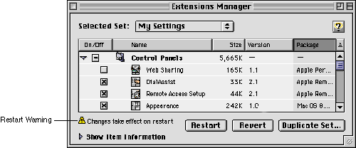
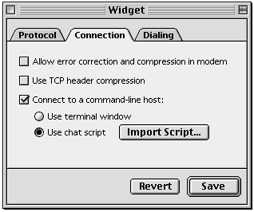
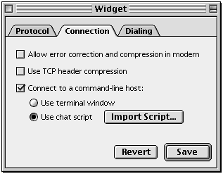

Settings
In most cases, changes made to control panel settings should take effect immediately, with no additional user action required (for example, without having to close a window or quit the control panel). If a change is potentially disruptive, however, you should postpone the effect to avoid possible problems. For example, a Network control panel should not actually save the settings until you indicate (by selecting Save Settings) that you want to do so. In such cases, the effect may be postponed until the control panel is closed or, if necessary, until the system is restarted. If the system must be restarted to effect the new settings, the control panel's window should display a brief explanation (accompanied by a small alert icon) of this behavior when changes are made. Figure 6-12 shows this message in the Extensions Manager control panel.Figure 6-12 Alert message in the Extensions Manager control panel

As a rule, control panel settings should be saved automatically when the control panel quits. Only if the settings are complicated or technical should saving them require an explicit user action. In such instances, requiring an explicit save allows the user to retreat from unintended changes.
The user should save and restore settings in logical sections rather than globally if possible. For example, in a control panel that configures several different devices, the user might be able to save and restore settings for each device rather than for all devices simultaneously.
Global save and restore commands may be used instead if it is impossible to separate a control panel's settings into logical groups. In this case, the control panel window should include Save and Revert buttons (which are disabled until changes are made), and the File menu should include corresponding Save Settings and Revert to Saved Settings commands. A confirmation dialog box should be displayed if the user quits the control panel with unsaved changes.
When designing the control panel, you must make it clear to the user which settings are affected by the save and restore functions. The user must know whether settings are saved globally or in sections; if they are saved in sections, then the user must be able to discern the boundaries between sections. The simplest solution is to design the control panel so that each section of savable settings is edited in a separate dialog with its own OK and Cancel buttons.
Saving and restoring settings in modal multi-pane dialogs is especially problematic and should be avoided if possible. If you must use multi-pane windows in such cases, then you must make sure the user can tell whether the save and revert commands apply to a single pane or to the entire dialog. Figure 6-13 shows an example of saving globally (the Save and Revert buttons are separate from the individual panes).
Figure 6-13 Saving and restoring globally in a multi-pane control panel

Figure 6-14 shows an example of saving in sections (each pane has its own Save and Revert buttons).
Figure 6-14 Saving and restoring sections in a multi-pane control panel
